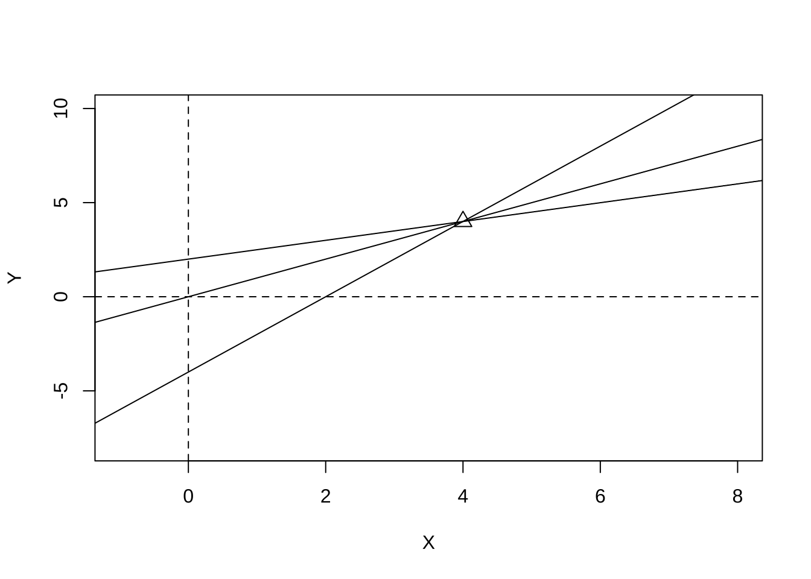

부록 A: 과제 2 해답
A.1 2.6
회귀계수의 분산을 작게 할 수록 더 정확한 추정이 가능하므로 설명 변수의 변동 \(\sum(x_i-\bar x)^2\) 을 크게 하는 것이 좋다. 즉, 설명변수들이 평균으로 부터 많이 퍼져있게 배치하는 것이 좋다.
A.2 2.13
A.2.1 (1)
이차원 조건부 정규 분포와 회귀계수간의 관계는 다음과 같다.
\[ \beta_1 = \rho \frac{\sigma_y}{\sigma_x}, \quad \beta_0 = \mu_y - \rho \frac{\sigma_y}{\sigma_x} \mu_x \]
A.2.2 (2)
이차원 조건부 정규 분포의 모수에 표본 추정량을 대입해보자.
\[\begin{align*} \hat \rho \frac{\hat \sigma_y}{\hat \sigma_x} & = \frac{\sum(y_i-\bar y)(x_i - \bar x)}{ \sqrt{\sum (y_i-\bar y)^2 \sum (x_i - \bar x)^2}} \frac{ \sqrt{\sum (y_i-\bar y)^2 /(n-1) }}{ \sqrt{\sum (x_i-\bar x)^2/(n-1) }} \\ & = \frac{\sum(y_i-\bar y)(x_i - \bar x)}{ \sum (x_i-\bar x)^2} \\ & = \hat \beta_1 \\ \hat \mu_y - \hat \rho \frac{\hat \sigma_y}{\hat \sigma_x} \hat \mu_x & = \bar y -\hat \beta_1 \bar x \\ & = \hat \beta_0 \end{align*}\]
A.3 3.3
\[ (X^t X)^{-1} = \frac{1}{n\sum X_i^2 -(\sum X_i)^2} \begin{pmatrix} \sum X_i^2 & -\sum X_i \\ -\sum X_i & n \end{pmatrix} = \frac{1}{n(\sum (X_i -\bar X)^2)}\begin{pmatrix} \sum X_i^2 & -\sum X_i \\ -\sum X_i & n \end{pmatrix} \]
\(Var(\hat \beta ) =\sigma^2 (X^t X)^{-1}\)이므로 절편과 기울기의 추정량의 공분산은 다음과 같이 주어진다.
\[ Cov(\hat \beta_0, \hat \beta_1) = - \sigma^2 \frac{\sum X_i}{n(\sum (X_i -\bar X)^2)} = - \sigma^2 \frac{\bar X}{ SS_{XX}} \]
단순 회귀직선은 언제나 \((\bar X, \bar Y)\) 점을 지나는 직선이다. 따라서 \(\bar X\)가 양수인 경우에 기울기가 증가(감소)하면 절편이 감소(증가)한다.
아래의 그림은 \((\bar X, \bar Y)=(4,4)\)을 지나는 여러 가지 회귀직선을 그린 그림으로서 절편과 기울기의 추정량에 대한 공분산이 음수인 것을 직관적으로 설명한다.
plot(c(-1,8),c(-8,10), type="n", xlab="X", ylab="Y")
points(4,4,cex=1.5, pch=2)
abline(h=0,lty=2)
abline(v=0,lty=2)
abline(b=1, a=0)
abline(b=2, a=-4)
abline(b=0.5, a=2)
A.4 3.7
A.4.1 (1)
\[ y = \begin{bmatrix} 2 \\ 3 \\ 1 \\ 3 \\ 4 \\ 6 \\ 3 \\ 6 \\ \end{bmatrix} \quad X = \begin{bmatrix} 1 & -1 & -1 & -1 \\ 1 & +1 & -1 & -1 \\ 1 & -1 & +1 & -1 \\ 1 & +1 & +1 & -1 \\ 1 & -1 & -1 & +1 \\ 1 & +1 & -1 & +1 \\ 1 & -1 & +1 & +1 \\ 1 & +1 & +1 & +1 \\ \end{bmatrix} \]
\[ X^t X = \begin{bmatrix} 8 & 0 & 0 & 0\\ 0 & 8 & 0 & 0\\ 0 & 0 & 8 & 0\\ 0 & 0 & 0 & 8\\ \end{bmatrix} \]
A.4.2 (2)
\[ (X^t X)^{-1} = \begin{bmatrix} 1/8 & 0 & 0 & 0\\ 0 & 1/8 & 0 & 0\\ 0 & 0 & 1/8 & 0\\ 0 & 0 & 0 & 1/8\\ \end{bmatrix} \quad X^t y = \begin{bmatrix} 28\\ 8 \\ -2 \\ 10 \\ \end{bmatrix} \]
따라서 \[ \hat \beta =(X^t X)^{-1} X^t y = \begin{bmatrix} 3.5 \\ 1 \\ -0.25 \\ 1.25 \\ \end{bmatrix} \]
A.4.3 (3)
만약 \(X_1\)과 \(X_2\)만 사용하는 회귀 모형의 계수 추정결과는 다음과 같다. \(X_3\)를 모형에 포함할 때와 아닐 경우 모두 다른 독립변수에 대한 계수의 추정치는 같다.
\[ (X^t X)^{-1} = \begin{bmatrix} 1/8 & 0 & 0 \\ 0 & 1/8 & 0 \\ 0 & 0 & 1/8 \\ \end{bmatrix} \quad X^t y = \begin{bmatrix} 28\\ 8 \\ -2 \\ \end{bmatrix} \quad \hat \beta =(X^t X)^{-1} X^t y = \begin{bmatrix} 3.5 \\ 1 \\ -0.25 \\ \end{bmatrix} \]
A.4.4 (4)
이렇게 \(X_3\)를 모형에 포함할 때와 아닐 경우 모두 다른 독립변수에 대한 계수의 추정치가 같은 이유는 \(X^t X\)행렬이 대각행렬이기 때문이며 이는 각 독립변수(절편포함)의 열벡터들이 서로 직교하기 때문이다. 두 열벡터가 직교하는 것은 내적이 0이 된다는 것이다.
위의 계산결과들은 아래와 같이 R 프로그램을 이용하여 얻을 수 있다.
x1 <- c(-1, 1, -1, 1, -1, 1,-1, 1)
x2 <- c(-1, -1, 1, 1, -1, -1, 1, 1)
x3 <- c(-1, -1, -1, -1, 1, 1, 1, 1)
y <- c(2,3,1,3,4,6,3,6)
dat1 <- data.frame(y=y, x1=x1,x2=x2,x3=x3)
lm3 <- lm(y~ x1+x2+x3, data=dat1)
summary(lm3)##
## Call:
## lm(formula = y ~ x1 + x2 + x3, data = dat1)
##
## Residuals:
## 1 2 3 4 5 6 7 8
## 5.000e-01 -5.000e-01 2.776e-17 8.049e-16 6.384e-16 -5.551e-17 -5.000e-01 5.000e-01
##
## Coefficients:
## Estimate Std. Error t value Pr(>|t|)
## (Intercept) 3.5000 0.1768 19.799 3.84e-05 ***
## x1 1.0000 0.1768 5.657 0.00481 **
## x2 -0.2500 0.1768 -1.414 0.23020
## x3 1.2500 0.1768 7.071 0.00211 **
## ---
## Signif. codes: 0 '***' 0.001 '**' 0.01 '*' 0.05 '.' 0.1 ' ' 1
##
## Residual standard error: 0.5 on 4 degrees of freedom
## Multiple R-squared: 0.9545, Adjusted R-squared: 0.9205
## F-statistic: 28 on 3 and 4 DF, p-value: 0.003815X <- model.matrix(lm3)
t(X) %*% X## (Intercept) x1 x2 x3
## (Intercept) 8 0 0 0
## x1 0 8 0 0
## x2 0 0 8 0
## x3 0 0 0 8solve(t(X) %*% X )## (Intercept) x1 x2 x3
## (Intercept) 0.125 0.000 0.000 0.000
## x1 0.000 0.125 0.000 0.000
## x2 0.000 0.000 0.125 0.000
## x3 0.000 0.000 0.000 0.125solve(t(X) %*% X) %*% t(X) %*% y## [,1]
## (Intercept) 3.50
## x1 1.00
## x2 -0.25
## x3 1.25lm4 <- lm(y~ x1+x2, data=dat1)
summary(lm4)##
## Call:
## lm(formula = y ~ x1 + x2, data = dat1)
##
## Residuals:
## 1 2 3 4 5 6 7 8
## -0.75 -1.75 -1.25 -1.25 1.25 1.25 0.75 1.75
##
## Coefficients:
## Estimate Std. Error t value Pr(>|t|)
## (Intercept) 3.5000 0.5809 6.025 0.00181 **
## x1 1.0000 0.5809 1.721 0.14581
## x2 -0.2500 0.5809 -0.430 0.68487
## ---
## Signif. codes: 0 '***' 0.001 '**' 0.01 '*' 0.05 '.' 0.1 ' ' 1
##
## Residual standard error: 1.643 on 5 degrees of freedom
## Multiple R-squared: 0.3864, Adjusted R-squared: 0.1409
## F-statistic: 1.574 on 2 and 5 DF, p-value: 0.295A.5 추가 문제
A.5.1 추가 문제 1
중회귀 모형 \(\bm y = \bm X \bm \beta\) 에서 회귀제곱합 \(SSR\)의 기대값을 구하시오.
\[\begin{align*} E(SSR) &= E[{\bm y}^t (\bm H - \bm 1 \bm 1^t /n) \bm y] \\ & = (\bm X \bm \beta)^t (\bm H - \bm 1 \bm 1^t /n) (\bm X \bm \beta) + tr[(\bm H - \bm 1 \bm 1^t /n)(\sigma^2 \bm I )] \\ & = {\bm \beta}^t \bm X^t (\bm H - \bm 1 \bm 1^t /n) \bm X \bm \beta + \sigma^2 tr(\bm H - \bm 1 \bm 1^t /n) \\ & = {\bm \beta}^t ( \bm X^t \bm H \bm X - \bm X^t \bm 1 \bm 1^t \bm X /n ) \bm \beta + \sigma^2 [ tr(\bm H) - tr (\bm 1 \bm 1^t) /n ] \\ & = {\bm \beta}^t (\bm X^t \bm X - \bm X^t \bm 1 \bm 1^t \bm X /n ) \bm \beta + \sigma^2 (p-1) \\ & = {\bm \beta}^t \bm X^t ( \bm I - \bm 1 \bm 1^t /n ) \bm X \bm \beta + \sigma^2 (p-1) \end{align*}\]A.5.2 추가 문제 2
최소제곱 추정량 \(\hat {\bm \beta}\)와 잔차 벡터 \(\bm y - \bm X \hat {\bm \beta}\)의 공분산 행렬이 \(\bm 0\)임을 보이시오.
다음은 반응변수 벡터에 대한 두 개의 선형변환 \(\bm A \bm y\) 과 \(\bm B \bm y\)의 공분산을 구하는 공식이다.
\[\begin{align*} Cov(\bm A \bm y, \bm B \bm y) & = E [(\bm A \bm y -E(\bm A \bm y) )(\bm B \bm y - E(\bm B \bm y)^t)] \\ & = \bm A E [(\bm y -E(\bm y) )(\bm y -E(\bm y) )^t ] \bm B^t \\ & = \bm A (\sigma^2 \bm I) \bm B^t \\ & = \sigma^2 \bm A \bm B^t \end{align*}\]위의 문제에서
\[ \hat {\bm \beta} = (\bm X^t \bm X)^{-1} \bm X^t \bm y, \quad \bm y - \bm X \hat {\bm \beta} = (\bm I - \bm H) \bm y \]
이므로 다음과 같은 결과를 얻는다. 따라서 최소제곱 추정량 \(\hat {\bm \beta}\)와 잔차 벡터 \(\bm y - \bm X \hat {\bm \beta}\)의 공분산 행렬이 \(\bm 0\)이다.
\[ (\bm X^t \bm X)^{-1} \bm X^t (\bm I - \bm H) = \bm 0 \]
A.5.3 추가 문제 3
\(n\)개의 확률변수 \(y_1, y_2, \dots, y_n\) 이 독립적으로 \(N(\mu, \sigma^2)\)에서 추출되었다.
- 다음의 방정식이 성립함을 보이시오.
\[ \sum_{i=1}^n (y_i -\bar y)^2 = \sum_{i=2}^n (y_i -{\bar y}^*)^2 + \frac{n-1}{n}(y_1 - {\bar y}^*)^2 \] 여기서 \({\bar y}^* = \sum_{i=2}^n y_i/(n-1)\)
- 다음 주어진 통계량 \(Q\) 의 분포를 구하시오.
\[ Q =\frac{n-1}{n} \frac{(y_1 - {\bar y}^*)^2 }{\sigma^2} \]
먼저 몇 개의 필요한 공식을 유도해보자.
\[\begin{align*} y_1 - \bar y & = \frac{n-1}{n} ( y_1 - \bar y^*) \\ \bar y^* - \bar y & = \frac{1}{n}(\bar y^* - y_1) \end{align*}\]이제 \(\sum_{i=1}^y (y_i - \bar y)^2\)을 분해해 보자
\[\begin{align*} \sum_{i=1}^y (y_i - \bar y)^2 & = (y_1 - \bar y)^2 + \sum_{i=2}^n (y_i -\bar y^* + \bar y^* - \bar y)^2 \\ & = \frac{(n-1)^2}{n^2} ( y_1 - \bar y^*)^2 + \sum_{i=2}^n (y_i -\bar y^*)^2 + \sum{i=2}^n (\bar y^* - \bar y)^2 + 2 \sum_{i=2}^n (y_i -\bar y^*) (\bar y^* - \bar y) \\ & = \frac{(n-1)^2}{n^2} ( y_1 - \bar y^*)^2 + \sum_{i=2}^n (y_i -\bar y^*)^2 + \frac{n-1}{n^2} (\bar y^* - y_1)^2 + 0 \\ & = \sum_{i=2}^n (y_i -\bar y^*)^2 + \frac{n-1}{n} (\bar y^* - y_1)^2 \end{align*}\]이제 다음과 같이 두 개의 통계량이 카이 제곱 분포를 따르므로
\[ \sum_{i=1}^n (y_i -\bar y)^2/\sigma^2 \sim \chi^2(n-1), \quad \sum_{i=2}^n (y_i -{\bar y}^*)^2/\sigma^2 \sim \chi^2(n-2) \]
다음 통계량 \(Q\) 는 \(\chi^2(1)\) 을 따른다 (교수 강의모트 Theorem C.3) .
\[ Q =\frac{n-1}{n} \frac{(y_1 - {\bar y}^*)^2 }{\sigma^2} \]